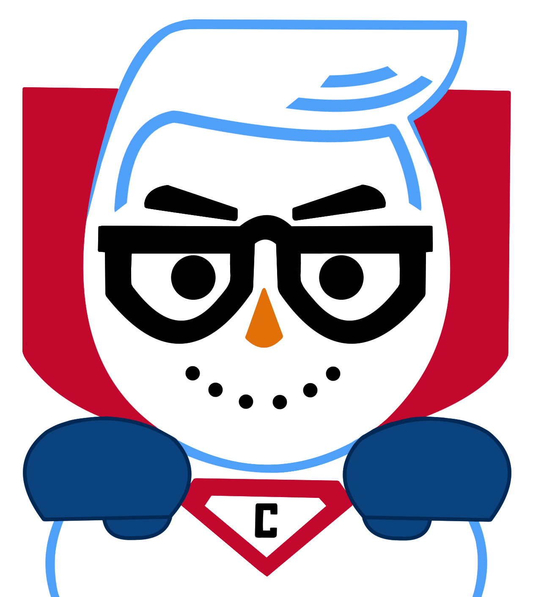

<div class="not-found-top">
  
  @if (statusCode) {
    <div>
      <strong><h1 class="huge" tabindex="0" attr.aria-label="Error status: {{ statusCode }}">{{ statusCode }}</h1></strong>
      <div tabindex="0" class="message">This Learning Object is currently under review.</div>
      @if (!auth.user) {
        <div>
          <div tabindex="0" class="message">Try logging in to see if you have access.</div><br>
          <div class="btn-group center">
            <a class="message" [routerLink]="['/auth/login']" [queryParams]="{redirectUrl: redirectUrl}" aria-label="Login">Login</a>
          </div>
        </div>
      } @else {
        <div tabindex="0" class="message">You do not have access to this Learning Object.</div>
      }
      <a routerLink='' class="message" aria-label="Clickable back to homepage link">Back to Home</a>
    </div>
  }
</div>
